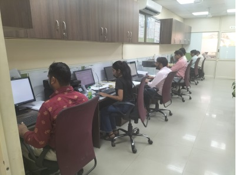

About Us
Welcome to Twostar Global Legend (P) Ltd.
TwoStar Global Legend Private Limited is founded in 2020 and constitutes a pioneering, independent, private limited company of consulting services in the sectors of technology, regional development, employment, innovation, environment, management and national collaborations.
TwoStar Global Legend Private Limited has the size, know-how, technology, human resources and infrastructures to meet all the challenges providing total quality solutions to private and public establishments.
Business Consultancy
Focused on SME's, Enterprises in expansion phases and nationalization of their operations, Non-Governmental Organizations, Hospital organisation Education and Training Organizations, we offer quality services.
TwoStar Global Legend Private Limited also offers its national network of clients/users from private and public sector. The group works closely with SMEs, industries, Hospital industry, academic institutions, local authorities and governmental bodies,
Innovation
TwoStar Global Legend Private Limited is constantly investing to improve its state-of-the-art knowledge not only in the domains of its core expertise but also in advanced technological areas that would potentially create new business activities, enhancing its service offering.
Working for Tomorrow
Our Research and Development team is starting to prepare different initiatives for the participations of the group.
We are ready to discuss new opportunities for collaboration.
Business Competitiveness
TwoStar Global Legend Private Limited adapts its provided services to the requirements of the customer, aiming at the more efficient collaboration and in observance to the environment, the requirements and the structures of the customer:
- Dedication to the customer
- Flexibility for the ideal satisfaction of needs
- Specialised personnel
- Possibility of operation in international and multinational environment
- Adaptability to the operation processes of the customer
- Flexibility in the mode of delivery
- Big experience in work of research and technology
The company combines INFRASTRUCTURES, HUMAN RESOURCES INTEGRATED PROCESSES in order to successfully complete each work undertaken
Quality policy
The company ensures the quality of the provided services applying an integrated system of quality and implements the undertaken projects with modern administration methods.